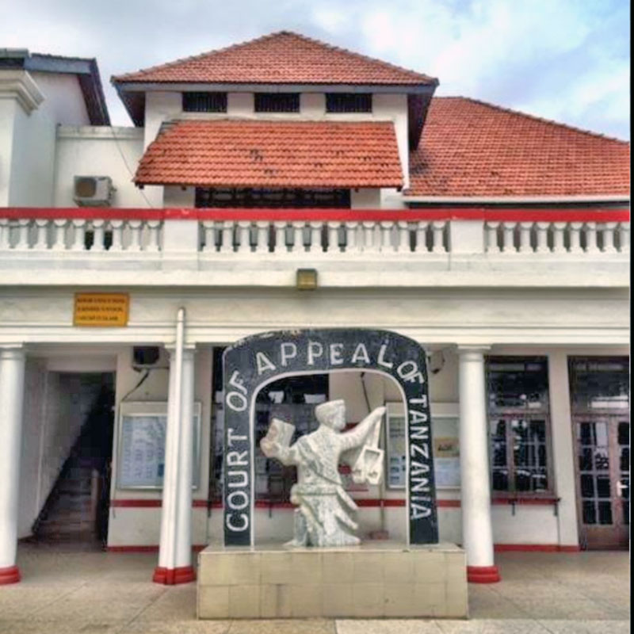

flowchart TB
A[(The </br> Republic)] --> B{The </br> Constitution}
B --> C[Legislature]
B --> D[Executive]
B --> E[Judiciary]
A law system is a huge and complex system to understand if not well explained, the system if often well understood by the few individual with privileged to serve upon it. 
A law system is a huge and complex system to understand if not well explained, the system if often well understood by the few individual with privileged to serve upon it.
The system is deffer from one place to another (One country to another), but the system is basically built under the principles of common laws. This is to say, many system share some similarities in many values.
Here in this session we sha discuss the system of common law system and basically, we shall focus on Tanzania Law and governance system, we shall look at the Constitution and law making bodies together with their roll. This will help many to simplify the division of power and duties of the government’s arms.
It is usually to be normal told that in Tanzania the governance system act on the principle of Division of Power, this is to say that, the Government is divided in three Arms, 1. Executive 1. Legislature 1. Judiciary
These are the arms of the government recognized by the Country’s Constitution of 1977. The constitution further provides genera articles to address the duty and mandate of each arm. Here we shall focus on general provisions.
General concept.
The concept is usually one and the same, then Avery arm has its main roll, that none should interfere the others mandate. It is indeed a theory of how to explain the separation of power, but in reality the reverse is the case, all the government’s arms are somewhere intervenes each other as well as depend on each other practical.
That each arm should not practice or act the duties of other arm, therefor to avoid the conflict of the law, then each arm shall only execute its mandate in accordance with the Constitution. But practically it is total different, because we shall see how each arm operate and where one arm perform the duty of the other accordance with the laws and even the constitution it self.
Rolls of the Arms.
The law makers, Government’s Adviser and Executive’s Supervisor.
We are all familial with legislature class, because this class is formed by the most famous individuals (Politicians), this class is formed through political parties by the authority of election. It is made up by two groups, President and all members of parliament.
Parliament has its traditional and standing orders, which lead it to conduct its daily mandate, the leadership of the parliament is in accordance with the Tanzania constitution where we find the top leadership, consist of
And in standing orders we find other leaders of the parliament such as Parliament secretary who is appointed by a President and parliament chairmen s, who are elected by members of the parliament and leaders of the committees, who are appointed by Speaker of the national Assembly.
Among the members of the parliament is where we get Government’s Prime Minister, Ministers and Deputy Ministers, this is in accordance with the Tanzania Constitution of 1977. The Prime Minister, ministers and deputy ministers are appointed by the President, who is the part of parliament and the heard of the government, to serve in executive arm.
The president being the part of parliament, means the survival of the parliament is the survival of the president, so in order the Presidency to function it must first open the parliament, as well as the presidency to cease it must cease the parliament. This is what it called SEMI PRESIDENCIAL SYSTEM.
The parliament make laws by discussing and pass the bill by vote of one third of all attended members of parliament in that particular session, the bill is prepared by the central government and brought to the parliament by a minister. After the bill is passed it requires the approval of the President to become a Law.
Therefor when we say the Parliament makes Laws, simply means The whole members of the parliament and the President, together they make Laws. The laws made by the parliament are called, Statutes (Written Laws). These are the main laws in the land after the Constitution which is the Supreme Law.
The Presidency and The law executors.
Many are familial with the word “Government”, but this is what it called the Executive class, this class is also famous, because it is also made up by political class, it is consist of Country’s
President is the head of executive class with functions.
Functions of the President.
The President act upon those tree mentioned functions, this means, there is a time when the President performs the duties of State, then there is time when the President performs duties of the Government and also the duties of Commander in chief. Through these functions which are provided under the Constitution of Tanzania of 1977, the executive Prepare laws to execute its mandates.
Laws made by Executives are called, Regulations, bylaws, Orders and Instruments. Below we shall show how do these mentioned laws, operate. These laws are minor to those of the parliaments, although the government is given authority by the constitution, to make laws. This is in accordance with the provision under constitution of delegation of Parliament’s power to the Government to act on its behalf.
The cabinet makes Instruments for the Ministries, Ministries make Regulations for its organs, and organs make policy and and Bylaws.
The Judges and The Laws Interpreters.
Judiciary is one of the Government’s arm, a judiciary system is consist of Chief Justice. Justices, Magistrates, Lawyers and Court’s administration which is headed by His Lordship Chief Justice. Judiciary get its legality through the Tanzania Constitution of 1977, as well as its mandate to translate the law.
The head of the judiciary is the Chief justice of Tanzania, who is constitutionally appointed by the President of Tanzania. And once appointed can never be removed, until the retirement.
Judiciary is the arm which in its exercise, enjoys full liberty and SUO MORTU. Which is the power to intervene in and matter with the public interest, also Judiciary is the last decider of state affairs, simply the judgement of the court is last decision.

Court System.
The Laws interpreted by Courts are known as Case Laws (Precedents), This are bind laws to the courts decisions. Courts also gives Orders to be executed by both The parliament and Executive.
The concept that Legislature is the only arm that makes Laws, is practically not applicable in common law system, because during the execution, other arms also make some laws to execute both the Mother law as well as other written laws.
Therefor in summary, these are the Executable Laws made under the provision of the constitution of Tanzania of 1977, from each arm of the government.
flowchart TB
A[(The </br> Republic)] --> B{The </br> Constitution}
B --> C[Legislature]
B --> D[Executive]
B --> E[Judiciary]
flowchart TB
C[Legislature] --> D[Executive]
D -- Bill--> C
C --> E{Judiciary's </br> Decisions}
D[Executive's </br> Instruments] --> F(Ministry's </br> Regulations and </br> Rules )
F --> G(Ministry's Organs, </br> Institutes and </br> Local Governments)
G -- Policy --> D
G -- Bylaws and guide lines --> A[(The </br> Republic)]
E{Judiciary's </br> Decisions} -- Rules and Orders --> A[(The </br> Republic </br>)]
E -- Orders --> C[Legislature's </br> Statutes]
E -- Orders --> D
If you enjoyed this post, then don't miss out on any future posts by subscribing to my email newsletter.